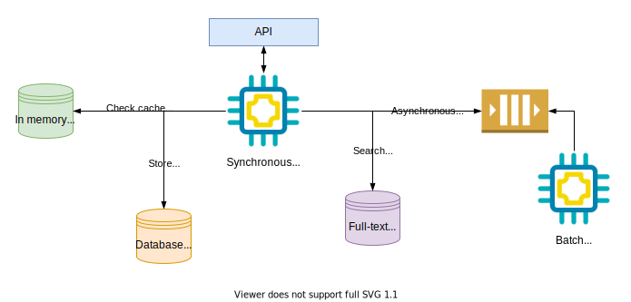

Designing data-intensive applications
Standard Building blocks

- Databases to store data
- Caches to speed-up reads or remember expensive operation
- Queues/Streams for asynchronous processing
- Indexes for searching and filtering stored data
- Offline processing for crunching accumulated data or async operations
Three important concerns
- Reliability - Can the system gracefully handle hardware/software faults and human errors? This is about being fault-tolerant or resilient
- Scalability - Can the system keep up good performance with increased load (either in traffic or data volume)?
- Maintainability - Have we made life better for engineering and operations teams?
Reliability
Fault vs Failure - In a complex system, fault is when one of the components deviates from the specification. Whereas, failure is when the system as a whole stops working.
Types of Faults
- Hardware faults
- disk crash, faulty RAM, power blackout, network failure
- Software Errors
- Edge cases crashing the process
- Memory leak
- Cascading failures
- Human errors
- Configuration errors
How to handle different types of faults?
- Hardware failures - Add redundancy to individual hardware component
- Disk - RAID configuration
- Server - Dual power supplies
- Hot-swappable CPUs
- Datacenter with backup power (batteries or diesel generators)
- Software Errors
- Testing
- Process isolation
- Allow crash and automatic restart
- Monitoring & Alerting
- Human Errors
- Fully featured Sandbox environment
- Thorough testing - Unit test, Integration test, etc
- Gradual code rollout
- Ease to rollback configuration changes
- Telemetry - Detailed monitoring
- Good training
Scalability
- Describe the current load on the system using one of the 'load paramter' below
- req/sec,
- ratio of db reads and writes
- Cache hit ratio
- simultaneous active users
- Describe performance - as this gives the benchmark to see how the performance will be affected if we increase load while keeping system resources constant
- Batch systems
- Throughput
- Time take to complete work that uses a dataset of fixed size
- Online
- Response time in percentiles
- Batch systems
- Approaches for coping with load
- Estimate and design for future growth
- Choose wisely between scaling-up and scaling-out as there is not secret 'magic scaling sauce'
Maintainability
- Three design principles
- Operability - Make it easy for operations teams to run the system smoothly
- Simplicity - Make it easy for new engineers to understand the system
- Avoiding 'big ball of mud'
- Removing 'accidental complexity' with good abstractions
- Evolvability - Make it easy to make future changes - Extensibility or Plasticity
Fault vs Failure Tail latencies Head-of-line blocking